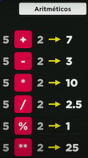

> Alerta com lacuna para escrever
window.prompt('Qual é o seu nome?')
> Template String: ${} - Usado como forma de melhorar a concatenação
window.alert('É um grande prazer em te conhecer, ' + nome + '!') // Concatenação
window.alert(`É um grande prazer em te conhecer, ${nome} !`) // Template String
> Template String: ${} // Usado como forma de melhorar a concatenação
window.alert(`A soma entre ${n1} e ${n2} é ${s}.`)
(number + number) para adição
(string + string) para concatenação
> Conversão de String para Number e vice-versa
String(n) ou n.toString() converte de qualquer coisa para String
var n1 = Number(window.prompt('Digite um número: '))
var n2 = Number(window.prompt('Digite outro número: '))
var s = n1 + n2
> Contagem e Alteração de Caracteres
var s = 'JavaScript'
s.lenght // quantos caracteres a string tem
s.toUpperCase() // tudo para 'MAIÚSCULAS'
s.toLowerCase() // tudo para 'minúsculas'
> Alteração de Casas Decimais e Ponto e Vírgula
var n1 = 1545.5
n1.toFixed(2) // Termina com 2 casas decimais: 1545.50
n1.toFixed(2).replace('.', ',') // Substitui o ponto por vírgula
> Estilo Monetário / Contabilidade
n1.toLocaleString('pt-BR', {style: 'currency', currency: 'BRL'})
> Bizus de Aritmética

> Auto Referência Aritmética
var num = 8
num = 8 + 2 // Agora num = 10
num += 2 // Obtém o mesmo resultado
num ++ // É o mesmo que +1
num -- // É o mesmo que -1
> Operadores
5 == 5 // true
5 == '5' // 5 é igual a 5? // true
5 === '5' // 5 é idêntico de 5? // false
=== // Operador de Igualdade Restrita
> Operadores Lógicos
Árvore DOM
var teste
window.document.getElementsByTagName('teste')[0]
getElementsBy... TagName, ById, ClassName podem tranquilamente ser substituídos pelo: querySelector ou querySelectorAll
Variáveis Compostas
Cada array é uma variável que possui vários elementos que possuem valor e chaves de identificação.